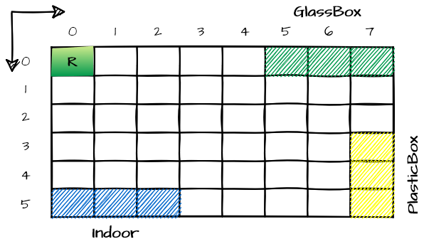

Introduction
Requirements
Requirement analysis
The interaction with the client has clarified the meaning of the following terms:
Service area : A conventional rectangular room, free of internal obstacles and bordered by solid walls. The room must include an Indoor, a PlasticBox and a GlassBox.Indoor : a port used to enter waste material into the service-area.PlasticBox : container, devoted to store objects made of plastic, upto MAXPB kg of material.GlassBox : container, devoted to store objects made of glass, upto MAXGB kg of material.MAXPB : pre-set value representing the maximum capacity of the PlasticBox.MAXGB : pre-set value representing the maximum capacity of the GlassBox.DDR robot : Differential Drive Robot, a robot that works as a transport trolley. It is capable of moving in the environment by executing simple move commands. The transport trolley has the form of a square of side length RD.Home location : fixed starting position inside the service-area where the robot will be located before the software starts and where it will return if no jobs are pending.WasteServiceStatusGUI : a user interacting component that allow the service-manager to observe the state of the service-area including:- the current state of the transport trolley and it position in the room
- the current weight of the material stored in the two waste-containers
- the current state of the Led.
Current state of the transport trolley : indicates the status of the trolley, if it is stopped, in motion, or in the HOME position.Current state of the Led : indicates the status of the led, if it is off, on, or it is blinking.Warning devices : a physical led that represents the state of the transport trolley.Alarm devices : a physical sonar that operates as a distance detector, if the measured distance is less than DLIMIT the robot must be stopped, it will be reactivated only when the distance will return to be greater than DLIMIT.DLIMIT : maximum fixed distance below which the robot must be stopped.TruckLoad kg : weight of waste transported by the waste truck.
Definition of a formal model of the requirements
Since our software must move the robot inside the service-area, we must find a way to automatically test all tasks concerning movements. At this stage, we need to introduce a proper representation of the service-area.- h : starting cell of the robot
- 0 : cell not occupied (robot can pass over it)
X : cell representing indoor- X : cell occupied by GlassBox and PlasticBox
- RD = diameter of the circle of minimum radius surrounding the robot.
Overview of the requirements
We have introduced a cartesian plan over the room in order to define a reference system. Then, as indicated in the image above, the reserved areas are:
- HOME in the cell (0, 0)
- Indoor-area in the cell (5, 0), (5, 1), (5, 2)
- GlassBox in the cell (0, 5), (0, 6), (0, 7)
- PlasticBox in the cells (7, 3), (7, 4), (7, 5)
User Stories
Through the user stories we can see the expected behavior of the system.
|
|
|
|
|
 |
|
 |
|
 |
|
 |